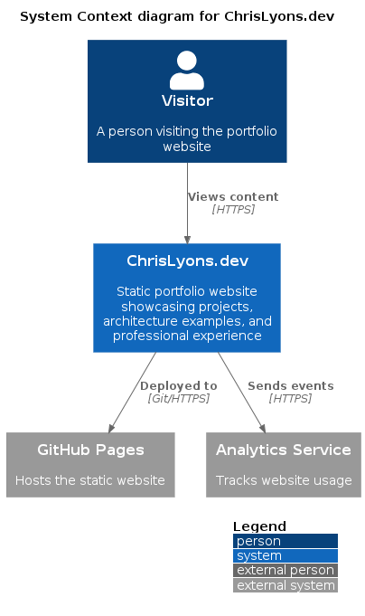
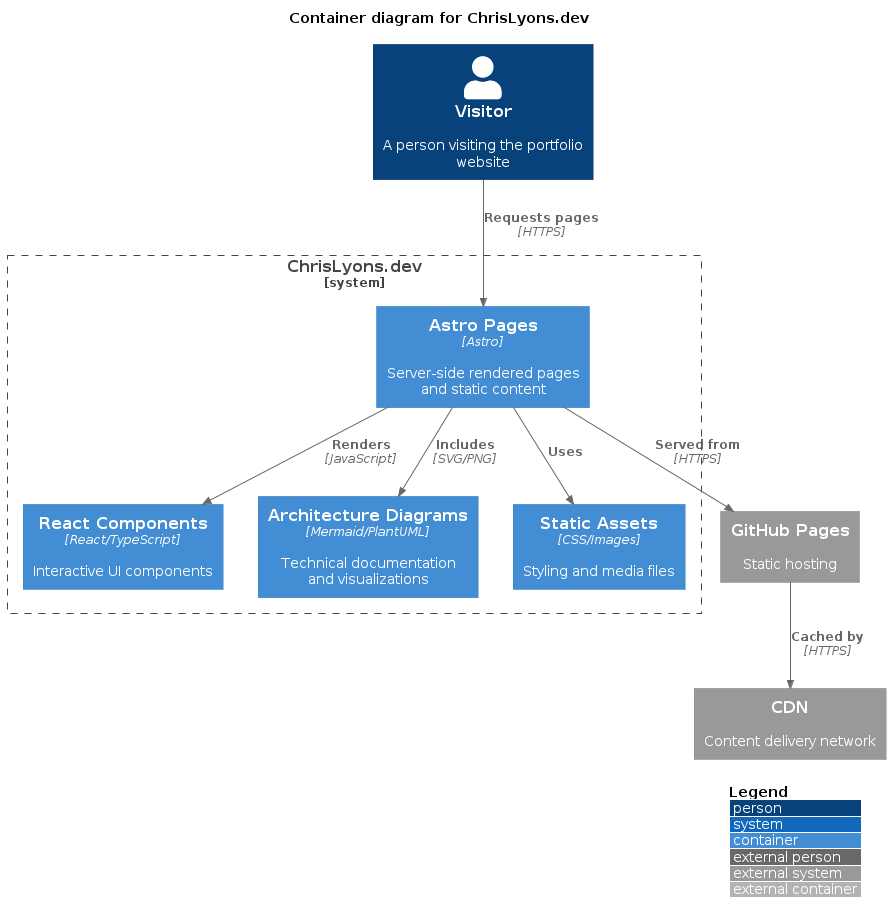

Architecture Overview¶
Understanding the system design and architecture.
System Context¶
This is a static website built with modern web technologies, focusing on performance and developer experience.
graph TB
User[User Browser]
CF[Cloudflare Pages/Edge]
Pages[GitHub Pages]
Repo[GitHub Repository]
User --> CF
CF --> StaticSite[Static HTML/CSS/JS]
User --> Pages
Pages --> Docs[Documentation Site]
Repo --> Actions[GitHub Actions]
Actions --> CF
Actions --> PagesArchitecture Principles¶
1. Static-First¶
Benefits: - No server required - Infinite scalability - Excellent performance - Low cost
Trade-offs: - No dynamic server logic - Build-time data fetching - Content updates require rebuild
2. Island Architecture¶
Interactive components are isolated "islands":
---
// Server-rendered (zero JS)
---
<div>
<h1>Static Content</h1>
<!-- Island: Interactive component -->
<ThemeToggle client:load />
<p>More static content</p>
</div>
Hydration Strategies:
- client:load - Load immediately
- client:idle - Load when idle
- client:visible - Load when in viewport
3. Component-Based¶
React components for reusable UI:
src/components/
├── ThemeToggle.tsx # Dark mode toggle
├── TechStack.tsx # Tech stack display
├── CodeBlock.tsx # Syntax highlighting
└── Navigation.tsx # Site navigation
4. File-Based Routing¶
Pages auto-route based on file structure:
src/pages/
├── index.astro → /
├── about.astro → /about
├── projects.astro → /projects
└── blog/
└── [slug].astro → /blog/*
System Design¶
Build Process¶
graph LR
Source[Source Files] --> Astro[Astro Compiler]
Astro --> HTML[Static HTML]
Astro --> Vite[Vite Bundler]
Vite --> JS[JavaScript Bundles]
Vite --> CSS[CSS Files]
HTML --> Dist[dist/]
JS --> Dist
CSS --> Dist
Dist --> Deploy[Deployment]Data Flow¶
sequenceDiagram
participant User
participant CDN
participant Browser
User->>CDN: Request page
CDN->>User: HTML (cached)
Browser->>Browser: Parse HTML
Browser->>CDN: Request CSS
CDN->>Browser: CSS (cached)
Browser->>CDN: Request JS (if needed)
CDN->>Browser: JS (cached)
Browser->>Browser: Hydrate components
Browser->>User: Interactive pageComponent Architecture¶
Layout System¶
src/layouts/
└── Layout.astro # Base layout
├── <head> # Meta tags, styles
├── <Header> # Site header
├── <main> # Page content
└── <Footer> # Site footer
Component Hierarchy¶
graph TD
Layout[Layout.astro]
Layout --> Header[Header]
Layout --> Main[Main Content]
Layout --> Footer[Footer]
Header --> Nav[Navigation]
Header --> Theme[ThemeToggle]
Main --> Page[Page Content]
Main --> Components[React Components]Styling Architecture¶
Tailwind CSS 4.x¶
/* global.css */
@import "tailwindcss";
/* Theme variables */
@theme {
--color-primary: oklch(0.5 0.2 250);
--color-bg: oklch(0.1 0 0);
}
/* Custom utilities */
@layer utilities {
.text-balance {
text-wrap: balance;
}
}
CSS Layers¶
@layer base # Base styles, resets
@layer components # Component styles
@layer utilities # Utility classes
State Management¶
Client-Side State¶
React components use hooks:
import { useState, useEffect } from 'react';
export default function Component() {
const [theme, setTheme] = useState('light');
useEffect(() => {
const stored = localStorage.getItem('theme');
if (stored) setTheme(stored);
}, []);
return <button onClick={() => setTheme('dark')}>Toggle</button>;
}
Global State¶
Shared via context or localStorage:
import { createContext, useContext } from 'react';
const ThemeContext = createContext('light');
export function ThemeProvider({ children }) {
return (
<ThemeContext.Provider value={theme}>
{children}
</ThemeContext.Provider>
);
}
Build Architecture¶
Vite Configuration¶
export default {
build: {
rollupOptions: {
output: {
manualChunks: {
'react-vendor': ['react', 'react-dom'],
},
},
},
},
};
Output Structure¶
dist/
├── index.html
├── about.html
├── _astro/
│ ├── [hash].css
│ └── [hash].js
└── assets/
└── [optimized images]
Generated Architecture Diagrams¶
All architecture diagrams are automatically generated and rendered as part of the CI/CD pipeline.
Module Dependencies¶
View the module dependency graph:

Routes Map¶
Application routes structure:

C4 System Context¶

C4 Container Diagram¶

Deployment Architecture¶
Cloudflare Pages (Primary)¶
graph LR
Push[Git Push] --> GH[GitHub]
GH --> CF[Cloudflare Pages Build]
CF --> Build[npm run build]
Build --> Deploy[Deploy to Edge]
Deploy --> CDN[Cloudflare CDN - 275+ cities]GitHub Pages (Docs)¶
graph LR
Push[Git Push] --> Actions[GitHub Actions]
Actions --> MkDocs[Build MkDocs]
MkDocs --> Deploy[Deploy Pages]
Deploy --> Site[GitHub Pages]Security Architecture¶
Content Security¶
- Static content (no user input)
- No server-side code
- No database
- CDN-level DDoS protection
Build Security¶
- Dependabot updates
- npm audit in CI
- Commit signing
- Branch protection
Performance Architecture¶
Optimization Layers¶
- Build Time: Minification, tree-shaking
- CDN Layer: Edge caching, compression
- Browser: Service workers, cache API
- Runtime: Lazy loading, code splitting